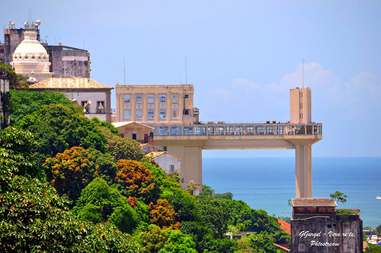
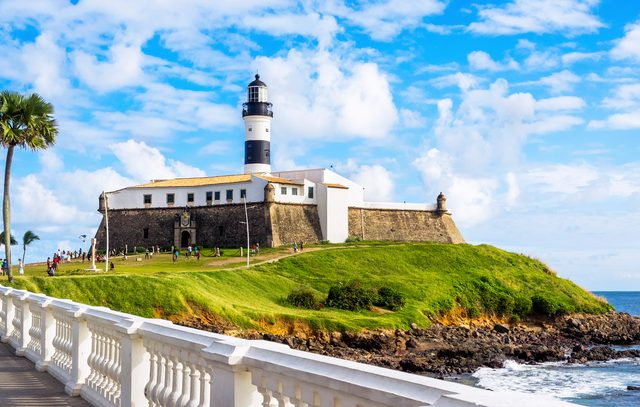

Agenda cultural, gastronomia, produtos criativos, locais curiosos e achados variados. Qualquer capital do país pode ter tópicos principais semelhantes quando o assunto é: dicas do que fazer ou comprar pela cidade. Mas Salvador tem um diferencial. Terra da mistura, a capital baiana é repleta de ângulos que podem gerar diversas indicações nada óbvias não somente para os turistas, mas também para quem já é nascido no meio do axé. Quer conhecer mais sobre nossa cultura? Siga algumas páginas recomendadas e fique por dentro de toda a história, música, religiões, comidas, lugares e muito mais! @ondecomeremsalvador @asmelhorescoisasdesalvador @indicobahia @bahiaempauta
SOTERÓPOLIS
Quem nasce em Salvador é soteropolitano. Essa forma adjetiva provém de Soterópolis - uma antiga cidade grega, erigida por seu imperador chamado Sotero. Sotero, em latim, é mesmo que Salvador. O gentílico salvadorense, apesar de registrado nos principais dicionários brasileiros, não tem uso no dia a dia.


Salvador - BAHIA
Primeira capital do Brasil, emoldurada pela baía de Todos os Santos e por praias de grande beleza natural, Salvador, patrimônio cultural da humanidade, preserva um conjunto arquitetônico que representa um pedaço vivo da história do Brasil, de que foi a primeira capital. Um dos maiores centros turísticos do país, Salvador se beneficia de características muito específicas. Tem clima quente e ensolarado o ano todo; a beleza natural de praias, como Ondina, Arembepe, Farol da Barra, Amaralina, e de lagoas, como a do Abaeté; as manifestações variadas da cultura negra, como culinária rica e exótica, música, ritmos quentes, sincretismo religioso, terreiros de candomblé e exibições de capoeira; as festas como as do Senhor do Bonfim e o carnaval, com seus trios elétricos; e um cenário magnífico de arquitetura histórica. É um grande centro cultural, com museus, igrejas, monumentos de arte e históricos e conjuntos arquitetônicos singulares como o Pelourinho, tombado pela UNESCO em 1983 e considerado patrimônio histórico da humanidade.
Menu Curiosidades
Comidas
Quando a pergunta for o que comer em Salvador, a resposta nunca será tão simples, já que existe uma grande variedade de pratos - típicos da Bahia ou não - que disputam espaço nos cardápios e no gosto de cada um, de acordo com sua particularidade e cheio do tal toque baiano. Você certamente vai se deparar com uma explosão de sabores, aromas e cores marcantes. O peixe está sempre presente, assim como também os frutos do mar, azeite de dendê e pimenta. É o calor baiano que você pode experimentar nos pratos típicos, basta decidir onde comer em Salvador e se esbaldar.
Ritmo AXÉ
O axé, ou axé music, é um gênero musical que surgiu no estado da Bahia na década de 1980 durante as manifestações populares do Carnaval de Salvador. A palavra "axé" é uma saudação religiosa usada no candomblé, que significa energia positiva. Expressão corrente no circuito musical soteropolitano.